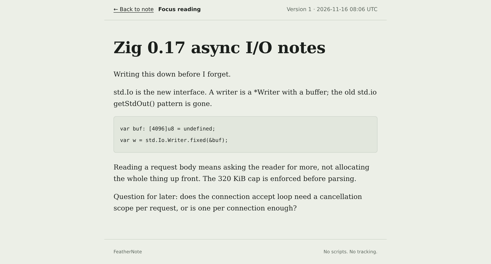
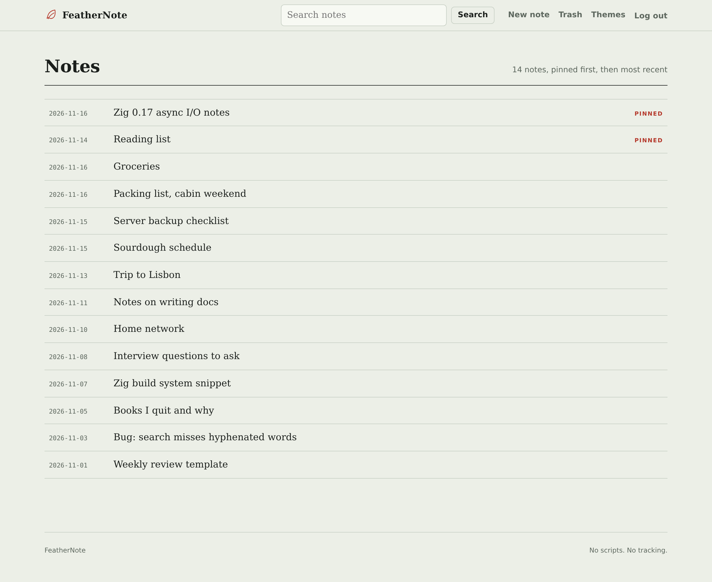
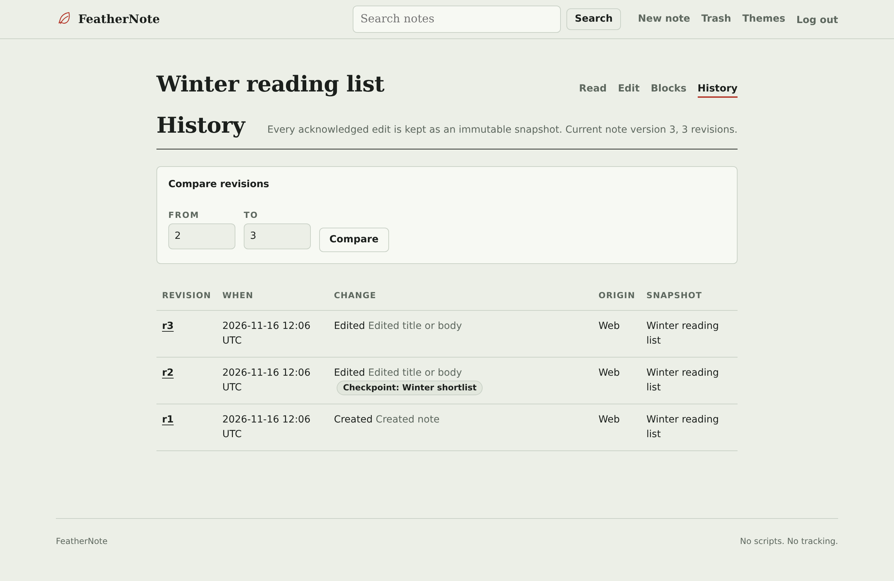
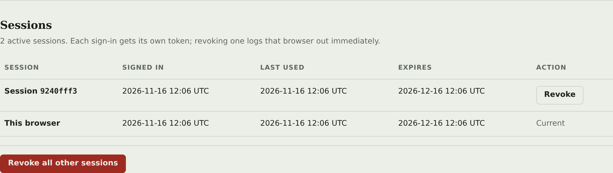

A private notebook
Less to hold.
More to keep.
FeatherNote is a single-owner notes app that stays out of the way. Write, close the tab, come back years later. It is still here.

Nothing to manage.
No dashboards, no feeds, no notifications. No tags to maintain before you are allowed to write something down.
01 / Writing
Write first. Sort it out later.
Markdown, rendered on the server. Headings, lists, tables, task lists, footnotes, code, and links. A plain source editor, an optional block editor, and a preview that saves nothing.
No toolbar to learn. No autosave race. No JavaScript.

02 / Memory
Every version is still there.
Each meaningful save becomes a full, immutable snapshot. Compare any two revisions, name a checkpoint, or restore an old draft as a new one. Nothing is rewritten behind your back.
History is kept by default. Purging is explicit, verified, and never removes a named checkpoint.

03 / Privacy
Yours, and no one else's.
One password protects the whole notebook. Sessions live on your server. Every mutation carries a CSRF token. Active browsers can be reviewed and revoked one at a time.
Notes and files stay in one SQLite file. Backups are checked before they are trusted.

One binary.
One database.
One person.
FeatherNote does not ask for an account, a subscription, or a connection to somebody else's computer.
Open source
Take it with you.
Read the code, run it on your own machine, and keep the backup as a single file.
github.com/ddawnlll/FeatherNote